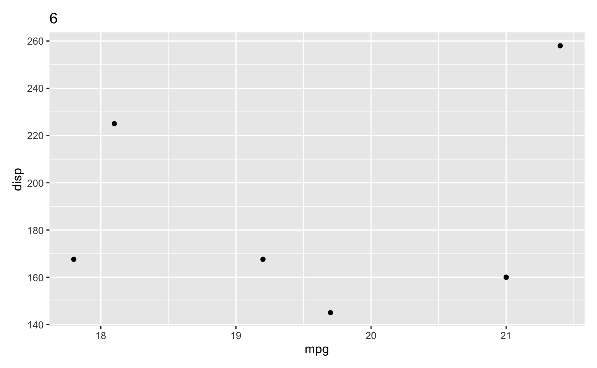

library(bro)
# devtools::install_github("thomasp85/patchwork")
library(patchwork)
library(tidyverse)
#> ── Attaching packages ──────────────────────────────────────────────────── tidyverse 1.2.1 ──
#> ✔ ggplot2 3.2.1 ✔ purrr 0.3.3
#> ✔ tibble 2.1.3 ✔ dplyr 0.8.3
#> ✔ tidyr 1.0.0 ✔ stringr 1.4.0
#> ✔ readr 1.3.1 ✔ forcats 0.4.0
#> Warning: Paket 'ggplot2' wurde unter R Version 3.5.2 erstellt
#> Warning: Paket 'tibble' wurde unter R Version 3.5.2 erstellt
#> Warning: Paket 'tidyr' wurde unter R Version 3.5.2 erstellt
#> Warning: Paket 'purrr' wurde unter R Version 3.5.2 erstellt
#> Warning: Paket 'dplyr' wurde unter R Version 3.5.2 erstellt
#> Warning: Paket 'stringr' wurde unter R Version 3.5.2 erstellt
#> Warning: Paket 'forcats' wurde unter R Version 3.5.2 erstellt
#> ── Conflicts ─────────────────────────────────────────────────────── tidyverse_conflicts() ──
#> ✖ dplyr::filter() masks stats::filter()
#> ✖ dplyr::lag() masks stats::lag()
p1 <- ggplot(mtcars) +
geom_point(aes(mpg, disp)) +
ggtitle('Plot 1')
p2 <- ggplot(mtcars) +
geom_boxplot(aes(gear, disp, group = gear)) +
ggtitle('Plot 2')
p3 <- ggplot(mtcars) +
geom_point(aes(hp, wt, colour = mpg)) +
ggtitle('Plot 3')
p4 <- ggplot(mtcars) +
geom_bar(aes(gear)) +
ggtitle('Plot 4')
patchwork1 <-
p1 + p2 + p3 + p4 +
plot_layout(
ncol = 4,
widths = unit(c(50, 25, 50, 25), "mm"),
heights = unit(50, "mm"),
guides = "collect"
)
patchwork2 <-
p1 + p2 + p3 + p4 +
plot_layout(
ncol = 4,
widths = unit(c(50, 25, 50, 205), "mm"),
heights = unit(25, "mm"),
guides = "collect"
)
patchwork3 <-
p1 + p2 + p3 + p4 +
plot_layout(
ncol = 4
)
# test bro_get_ggsize -----------------------------------------------------
bro_get_ggsize(p1)
#> width height
#> NA NA
bro_get_ggsize(list(p1, p2, p3))
#> width height
#> NA NA
bro_get_ggsize(list(patchwork1, patchwork2, patchwork3))
#> width height
#> 16.00079 2.76727
bro_get_ggsize(patchwork1)
#> width height
#> 8.914177 2.767270
bro_get_ggsize(patchwork2)
#> width height
#> 16.000791 1.783018
bro_get_ggsize(patchwork3)
#> width height
#> NA NA
# test bro_ggsave ---------------------------------------------------------
# bro_ggsave(p1, "test.pdf")
# bro_ggsave(list(p1, p2, p3), "test.pdf")
# bro_ggsave(list(patchwork1, patchwork2, patchwork3), "test.pdf")
# bro_ggsave(patchwork1, "test.pdf")
# bro_ggsave(patchwork2, "test.pdf")
# bro_ggsave(patchwork3, "test.pdf")
# test bro_wrap_plots_paged -----------------------------------------------
plots <-
list(p1, p2, p3, p4, p4, p3, p2, p1)
plots %>% bro_wrap_plots_paged()
#> [[1]]#>
#> [[2]]
#>
#> [[3]]
#>
#> [[4]]
#>
#> [[5]]#>
#> [[6]]#>
#> [[7]]#>
#> [[8]]

#>
#> [[2]]

plots %>% bro_wrap_plots_paged(ncol = 3, nrow = 3, width = unit(20, "mm"), height = unit(20, "mm"))
#> [[1]]
# plots %>% bro_wrap_plots_paged(ncol = 2, nrow = 2, width = unit(20, "mm"), height = unit(20, "mm")) %>%
# bro_ggsave("test.pdf")
#
# plots %>% bro_wrap_plots_paged(ncol = 6, nrow = 6, width = unit(40, "mm"), height = unit(40, "mm")) %>%
# bro_ggsave("test.pdf")
#
# plots %>% bro_wrap_plots_paged(ncol = 3, nrow = 3) %>%
# bro_ggsave("test.pdf")
#
# plots %>% bro_wrap_plots_paged(ncol = 6, nrow = 6) %>%
# bro_ggsave("test.pdf")
# test bro_facet_wrap_paged -----------------------------------------------
p1 %>% bro_facet_wrap_paged(facet_var = cyl)
#> [[1]]#>
#> [[2]]
#>
#> [[3]]p1 %>% bro_facet_wrap_paged(facet_var = cyl, width = unit(20, "mm"), height = unit(20, "mm"))
#> [[1]]#>
#> [[2]]#>
#> [[3]]p1 %>% bro_facet_wrap_paged(facet_var = cyl, ncol = 2, nrow = 2, width = unit(20, "mm"), height = unit(20, "mm"))
#> [[1]]
# p1 %>% bro_facet_wrap_paged(facet_var = cyl, ncol = 1, nrow = 1, width = unit(20, "mm"), height = unit(20, "mm")) %>%
# bro_ggsave("test.pdf")
#
# p1 %>% bro_facet_wrap_paged(facet_var = cyl, ncol = 2, nrow = 2, width = unit(20, "mm"), height = unit(20, "mm")) %>%
# bro_ggsave("test.pdf")
#
# p1 %>% bro_facet_wrap_paged(facet_var = cyl, ncol = 2, nrow = 2, width = unit(20, "mm"), height = unit(20, "mm")) %>%
# bro_ggsave("test.png")
#
# p1 %>% bro_facet_wrap_paged(facet_var = cyl, ncol = 2, nrow = 2) %>%
# bro_ggsave("test.png")
# test bro_set_panel_size -------------------------------------------------
p1 + plot_layout(widths = unit(40, "mm"), heights = unit(40, "mm"))
{p1 + facet_wrap(vars(cyl)) + plot_layout(widths = unit(40, "mm"), heights = unit(40, "mm"))} %>%
bro_ggsave("test.pdf")
#> Saving 2.22 x 2.61 in image (adjusted to absolute plot dimensions)
bro_set_panel_size(p1, unit(40, "mm"), unit(40, "mm"))

# problem with facet wrap
{bro_set_panel_size(p1 + facet_wrap(vars(cyl)), unit(40, "mm"), unit(40, "mm"))} %>%
class()
#> [1] "gg" "ggplot"
{bro_set_panel_size(p1 + facet_wrap(vars(cyl)), unit(40, "mm"), unit(40, "mm"))} %>%
bro_get_ggsize()
#> width height
#> NA NA
# {bro_set_panel_size(p1 + facet_wrap(vars(cyl)), unit(40, "mm"), unit(40, "mm"))} %>%
# bro_ggsave("test.pdf")
bro_set_panel_size(list(p1, p2, p3), unit(40, "mm"), unit(40, "mm"))
#> [[1]]
#>
#> [[2]]#>
#> [[3]]bro_set_panel_size(list(
p1 + facet_wrap(vars(cyl)),
p2 + facet_wrap(vars(cyl)),
p3 + facet_wrap(vars(cyl))
), unit(40, "mm"), unit(40, "mm"))
#> [[1]]#>
#> [[2]]#>
#> [[3]]